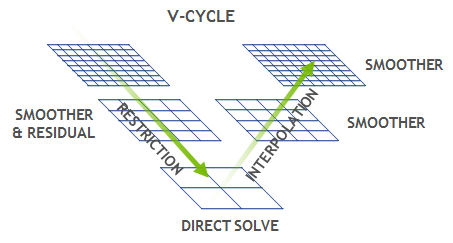

OpenACC: Analysis and Parallelization¶
What is OpenACC ?¶
OpenACC defines a set of compiler directives that allow code regions to be offloaded from a host CPU to be computed on a GPU
High level GPU programming
Large similarity to OpenMP directives
Support for both C/C++ and Fortran bindings
Extensive guides, tutorials, code samples and documentation on the OpenACC standard can be found at www.openacc.org.
OpenACC vs. CUDA or HIP¶
Steps in porting code to GPUs¶
The three key steps in porting to high performance accelerated code:
Analyze/Identify parallelism
Express data movement and parallelism
Optimize data movement and loop performance
Go back to 1!

Analyze your code to determine most likely places needing parallelization or optimization.
Parallelize your code by starting with the most time consuming parts and check for correctness.
Optimize your code to improve observed speed-up from parallelization.
The Himeno stencil benchmark¶
Solving Poisson’s equation for incompressible fluid by the Jacobi iteration method.

The NAS parallel benchmark MG¶
Multi-Grid on a sequence of meshes for computational fluid dynamics applications
(https://developer.nvidia.com/blog/high-performance-geometric-multi-grid-gpu-acceleration/)
Analysis and Parallelization¶
Serial Computing on CPU

Porting to GPU

NVIDIA nvprof provides a simple interface to collect on a target without using the GUI. (new NSight system)
GPU profiling capabilities: High-level usage statistics, Timeline collection, Analysis metrics
basic CPU sampling
himeno code
/*********************************************************************
This benchmark test program is measuring a cpu performance
of floating point operation and memory access speed.
Modification needed for testing turget computer!!
Please adjust parameter : nn to take one minute to execute
all calculation. Original parameter set is for PC with
200 MHz MMX PENTIUM, whose score using this benchmark test
is about 32.3 MFLOPS.
If you have any question, please ask me via email.
written by Ryutaro HIMENO, October 3, 1998.
Version 2.0
----------------------------------------------
Ryutaro Himeno, Dr. of Eng.
Head of Computer Information Center,
The Institute of Pysical and Chemical Research (RIKEN)
Email : himeno@postman.riken.go.jp
---------------------------------------------------------------
You can adjust the size of this benchmark code to fit your target
computer. In that case, please chose following sets of
(mimax,mjmax,mkmax):
small : 129,65,65
midium: 257,129,129
large : 513,257,257
ext.large: 1025,513,513
This program is to measure a computer performance in MFLOPS
by using a kernel which appears in a linear solver of pressure
Poisson included in an incompressible Navier-Stokes solver.
A point-Jacobi method is employed in this solver.
------------------
Finite-difference method, curvilinear coodinate system
Vectorizable and parallelizable on each grid point
No. of grid points : imax x jmax x kmax including boundaries
------------------
A,B,C:coefficient matrix, wrk1: source term of Poisson equation
wrk2 : working area, OMEGA : relaxation parameter
BND:control variable for boundaries and objects ( = 0 or 1)
P: pressure
-----------------
-------------------
"use portlib" statement on the next line is for Visual fortran
to use UNIX libraries. Please remove it if your system is UNIX.
-------------------
use portlib
Version 0.2
*********************************************************************/
#include <stdio.h>
#include "himeno_C.h"
#ifdef SMALL
#define MIMAX 129
#define MJMAX 65
#define MKMAX 65
#endif
#ifdef MIDDLE
#define MIMAX 257
#define MJMAX 129
#define MKMAX 129
#endif
#ifdef LARGE
#define MIMAX 513
#define MJMAX 257
#define MKMAX 257
#endif
#ifdef DOUBLE_PRECISION
typedef double real;
#else
typedef float real;
#endif
static real p[MIMAX][MJMAX][MKMAX];
static real a[MIMAX][MJMAX][MKMAX][4],
b[MIMAX][MJMAX][MKMAX][3],
c[MIMAX][MJMAX][MKMAX][3];
static real bnd[MIMAX][MJMAX][MKMAX];
static real wrk1[MIMAX][MJMAX][MKMAX],
wrk2[MIMAX][MJMAX][MKMAX];
#define NN 3
double second();
real jacobi(int);
void initmt();
static int imax, jmax, kmax;
static real omega;
int
main()
{
int i, j, k;
real gosa;
double cpu0, cpu1, nflop, xmflops2, score;
omega = 0.8;
imax = MIMAX-1;
jmax = MJMAX-1;
kmax = MKMAX-1;
/*
* Initializing matrixes
*/
initmt();
printf("mimax = %d mjmax = %d mkmax = %d\n",MIMAX, MJMAX, MKMAX);
printf("imax = %d jmax = %d kmax =%d\n",imax,jmax,kmax);
/*
* Start measuring
*/
cpu0 = second();
/*
* Jacobi iteration
*/
gosa = jacobi(NN);
cpu1 = second();
cpu1 = cpu1 - cpu0;
nflop = (kmax-2)*(jmax-2)*(imax-2)*34;
if(cpu1 != 0.0)
xmflops2 = nflop/cpu1*1.0e-6*(real)NN;
score = xmflops2/32.27;
printf("\ncpu : %f sec.\n", cpu1);
printf("Loop executed for %d times\n",NN);
printf("Gosa : %e \n",gosa);
printf("MFLOPS measured : %f\n",xmflops2);
printf("Score based on MMX Pentium 200MHz : %f\n",score);
// Now estimate how many iterations could be done in 20s
int nn2 = 20.0/cpu1*NN;
cpu0 = second();
gosa = jacobi(nn2);
cpu1 = second();
cpu1 = cpu1 - cpu0;
nflop = (kmax-2)*(jmax-2)*(imax-2)*34;
if(cpu1 != 0.0)
xmflops2 = nflop/cpu1*1.0e-6*(real)nn2;
score = xmflops2/32.27;
printf("\ncpu : %f sec.\n", cpu1);
printf("Loop executed for %d times\n",nn2);
printf("Gosa : %e \n",gosa);
printf("MFLOPS measured : %f\n",xmflops2);
printf("Score based on MMX Pentium 200MHz : %f\n",score);
return (0);
}
void initmt()
{
int i,j,k;
// TODO: Implement data initialization with OpenACC on device
// TODO: Implement computation with OpenACC on device
for(i=0 ; i<imax ; ++i)
for(j=0 ; j<jmax ; ++j)
for(k=0 ; k<kmax ; ++k){
a[i][j][k][0]=0.0;
a[i][j][k][1]=0.0;
a[i][j][k][2]=0.0;
a[i][j][k][3]=0.0;
b[i][j][k][0]=0.0;
b[i][j][k][1]=0.0;
b[i][j][k][2]=0.0;
c[i][j][k][0]=0.0;
c[i][j][k][1]=0.0;
c[i][j][k][2]=0.0;
p[i][j][k]=0.0;
wrk1[i][j][k]=0.0;
bnd[i][j][k]=0.0;
}
// TODO: Implement computation with OpenACC on device
for(i=0 ; i<imax ; ++i)
for(j=0 ; j<jmax ; ++j)
for(k=0 ; k<kmax ; ++k){
a[i][j][k][0]=1.0;
a[i][j][k][1]=1.0;
a[i][j][k][2]=1.0;
a[i][j][k][3]=1.0/6.0;
b[i][j][k][0]=0.0;
b[i][j][k][1]=0.0;
b[i][j][k][2]=0.0;
c[i][j][k][0]=1.0;
c[i][j][k][1]=1.0;
c[i][j][k][2]=1.0;
p[i][j][k]=(real)(k*k)/(real)((kmax-1)*(kmax-1));
wrk1[i][j][k]=0.0;
bnd[i][j][k]=1.0;
}
}
real jacobi(int nn)
{
int i,j,k,n;
real gosa, s0, ss;
// TODO: Implement data initialization with OpenACC on device
for(n=0;n<nn;++n){
gosa = 0.0;
// TODO: Implement computation with OpenACC on device
for(i=1 ; i<imax-1 ; ++i)
for(j=1 ; j<jmax-1 ; ++j)
for(k=1 ; k<kmax-1 ; ++k){
s0 = a[i][j][k][0] * p[i+1][j ][k ]
+ a[i][j][k][1] * p[i ][j+1][k ]
+ a[i][j][k][2] * p[i ][j ][k+1]
+ b[i][j][k][0] * ( p[i+1][j+1][k ] - p[i+1][j-1][k ]
- p[i-1][j+1][k ] + p[i-1][j-1][k ] )
+ b[i][j][k][1] * ( p[i ][j+1][k+1] - p[i ][j-1][k+1]
- p[i ][j+1][k-1] + p[i ][j-1][k-1] )
+ b[i][j][k][2] * ( p[i+1][j ][k+1] - p[i-1][j ][k+1]
- p[i+1][j ][k-1] + p[i-1][j ][k-1] )
+ c[i][j][k][0] * p[i-1][j ][k ]
+ c[i][j][k][1] * p[i ][j-1][k ]
+ c[i][j][k][2] * p[i ][j ][k-1]
+ wrk1[i][j][k];
ss = ( s0 * a[i][j][k][3] - p[i][j][k] ) * bnd[i][j][k];
gosa = gosa + ss*ss;
wrk2[i][j][k] = p[i][j][k] + omega * ss;
}
printf("nn %d, gosa %f\n",n,gosa);
// TODO: Implement computation with OpenACC on device
for(i=1 ; i<imax-1 ; ++i)
for(j=1 ; j<jmax-1 ; ++j)
for(k=1 ; k<kmax-1 ; ++k)
p[i][j][k] = wrk2[i][j][k];
} /* end n loop */
return(gosa);
}
double second()
{
#include <sys/time.h>
struct timeval tm;
double t ;
static int base_sec = 0,base_usec = 0;
gettimeofday(&tm, NULL);
if(base_sec == 0 && base_usec == 0)
{
base_sec = tm.tv_sec;
base_usec = tm.tv_usec;
t = 0.0;
} else {
t = (double) (tm.tv_sec-base_sec) +
((double) (tm.tv_usec-base_usec))/1.0e6 ;
}
return t ;
}
C*********************************************************************
C
C This benchmark test program is measuring a cpu performance
C of floating point operation by a Poisson equation solver.
CC
C If you have any question, please ask me via email.
C written by Ryutaro HIMENO, November 26, 2001.
C Version 3.0
C ----------------------------------------------
C Ryutaro Himeno, Dr. of Eng.
C Head of Computer Information Division,
C RIKEN (The Institute of Pysical and Chemical Research)
C Email : himeno@postman.riken.go.jp
C ---------------------------------------------------------------
C You can adjust the size of this benchmark code to fit your target
C computer. In that case, please chose following sets of
C (mimax,mjmax,mkmax):
C small : 65,33,33
C small : 129,65,65
C midium: 257,129,129
C large : 513,257,257
C ext.large: 1025,513,513
C This program is to measure a computer performance in MFLOPS
C by using a kernel which appears in a linear solver of pressure
C Poisson eq. which appears in an incompressible Navier-Stokes solver.
C A point-Jacobi method is employed in this solver as this method can
C be easyly vectrized and be parallelized.
C ------------------
C Finite-difference method, curvilinear coodinate system
C Vectorizable and parallelizable on each grid point
C No. of grid points : imax x jmax x kmax including boundaries
C ------------------
C A,B,C:coefficient matrix, wrk1: source term of Poisson equation
C wrk2 : working area, OMEGA : relaxation parameter
C BND:control variable for boundaries and objects ( = 0 or 1)
C P: pressure
C -------------------
INCLUDE "himeno_f77.h"
C
C ttarget specifys the measuring period in sec
PARAMETER (ttarget=60.0)
REAL*8 cpu,cpu0,cpu1,gettime
EXTERNAL gettime
omega=0.8
imax=mimax-1
jmax=mjmax-1
kmax=mkmax-1
CC Initializing matrixes
call initmt
write(*,*) ' mimax=',mimax,' mjmax=',mjmax,' mkmax=',mkmax
write(*,*) ' imax=',imax,' jmax=',jmax,' kmax=',kmax
CC Start measuring
C
nn=3
write(*,*) ' Start rehearsal measurement process.'
write(*,*) ' Measure the performance in 3 times.'
C
cpu0=gettime()
C
C Jacobi iteration
call jacobi(nn,gosa)
C
cpu1= gettime()
cpu = cpu1-cpu0
flop=real(kmax-2)*real(jmax-2)*real(imax-2)*34.0*real(nn)
xmflops2=flop/cpu*1.0e-6
write(*,*) ' Gosa :',gosa
write(*,*) ' MFLOPS:',xmflops2,' time(s):',cpu
C
C end the test loop
C AH: This estimate is now used to choose a number of iterations for the
C main performance measurement (aiming to take around a minute)
nn=int(ttarget/(cpu/3.0))
write(*,*) 'Now, start the actual measurement process.'
write(*,*) 'The loop will be excuted in',nn,' times.'
write(*,*) 'This will take about one minute.'
write(*,*) 'Wait for a while.'
C
C Jacobi iteration
cpu0=gettime()
call jacobi(nn,gosa)
C
cpu1= gettime()
cpu = cpu1-cpu0
flop=real(kmax-2)*real(jmax-2)*real(imax-2)*34.0*real(nn)
xmflops2=flop*1.0e-6/cpu
C
CCC xmflops2=nflop/cpu*1.0e-6*float(nn)
C
write(*,*) ' Loop executed for ',nn,' times'
write(*,*) ' Gosa :',gosa
write(*,*) ' MFLOPS:',xmflops2, ' time(s):',cpu
score=xmflops2/82.84
write(*,*) ' Score based on Pentium III 600MHz :',score
C
c pause
c stop
END
C
C
C**************************************************************
subroutine initmt
C**************************************************************
INCLUDE "himeno_f77.h"
C TODO: Implement data initialization with OpenACC on device
C TODO: Implement computation with OpenACC on device
do k=1,mkmax
do j=1,mjmax
do i=1,mimax
a(i,j,k,1)=0.0
a(i,j,k,2)=0.0
a(i,j,k,3)=0.0
a(i,j,k,4)=0.0
b(i,j,k,1)=0.0
b(i,j,k,2)=0.0
b(i,j,k,3)=0.0
c(i,j,k,1)=0.0
c(i,j,k,2)=0.0
c(i,j,k,3)=0.0
p(i,j,k) =0.0
wrk1(i,j,k)=0.0
bnd(i,j,k)=0.0
enddo
enddo
enddo
C
do k=1,kmax
do j=1,jmax
do i=1,imax
a(i,j,k,1)=1.0
a(i,j,k,2)=1.0
a(i,j,k,3)=1.0
a(i,j,k,4)=1.0/6.0
b(i,j,k,1)=0.0
b(i,j,k,2)=0.0
b(i,j,k,3)=0.0
c(i,j,k,1)=1.0
c(i,j,k,2)=1.0
c(i,j,k,3)=1.0
p(i,j,k) =float((k-1)*(k-1))/float((kmax-1)*(kmax-1))
wrk1(i,j,k)=0.0
bnd(i,j,k)=1.0
enddo
enddo
enddo
C
return
end
C
C*************************************************************
subroutine jacobi(nn,gosa)
C*************************************************************
INCLUDE "himeno_f77.h"
C TODO: Implement data initialization with OpenACC on device
DO loop=1,nn
gosa=0.0
C
C TODO: Implement computation with OpenACC on device
gosa1= 0.0
DO K=2,kmax-1
DO J=2,jmax-1
DO I=2,imax-1
S0=a(I,J,K,1)*p(I+1,J,K)+a(I,J,K,2)*p(I,J+1,K)
1 +a(I,J,K,3)*p(I,J,K+1)
2 +b(I,J,K,1)*(p(I+1,J+1,K)-p(I+1,J-1,K)
3 -p(I-1,J+1,K)+p(I-1,J-1,K))
4 +b(I,J,K,2)*(p(I,J+1,K+1)-p(I,J-1,K+1)
5 -p(I,J+1,K-1)+p(I,J-1,K-1))
6 +b(I,J,K,3)*(p(I+1,J,K+1)-p(I-1,J,K+1)
7 -p(I+1,J,K-1)+p(I-1,J,K-1))
8 +c(I,J,K,1)*p(I-1,J,K)+c(I,J,K,2)*p(I,J-1,K)
9 +c(I,J,K,3)*p(I,J,K-1)+wrk1(I,J,K)
SS=(S0*a(I,J,K,4)-p(I,J,K))*bnd(I,J,K)
GOSA1=GOSA1+SS*SS
wrk2(I,J,K)=p(I,J,K)+OMEGA *SS
enddo
enddo
enddo
C TODO: Implement computation with OpenACC on device
DO K=2,kmax-1
DO J=2,jmax-1
DO I=2,imax-1
p(I,J,K)=wrk2(I,J,K)
enddo
enddo
enddo
gosa= gosa + gosa1
C
enddo
return
end
C*************************************************************
C AH: Added this function to provide timing.
C It uses Fortran90.
C*************************************************************
function gettime() result(rtime)
C*************************************************************
implicit none
integer(kind=selected_int_kind(18)) :: ic,ir,im
real(kind=8) :: rtime
call system_clock(ic,ir,im)
rtime= real(ic,8)/real(ir,8)
end function
$ srun -n 1 nvprof --cpu-profiling on --cpu-profiling-mode top-down ./himeno.x
======== CPU profiling result (top down):
Time(%) Time Name
85.74% 18.16s jacobi
7.46% 1.58s initmt
0.94% 200ms | ???
6.75% 1.43s __c_mcopy4_sky
0.05% 10ms __c_mcopy4
OpenACC data model¶
Define a region with data declared in the device memory
C/C++:
#pragma acc data [clauses]Fortran:
!$acc data [clauses]clauses can be
copy,copyin,copyout, andpresent
Data transfers take place
from the host to the device upon entry to the region
from the device to the host upon exit from the region
Functionality defined by data clauses
Data clauses can also be used in
kernelsandparallelconstructs
OpenACC execution model¶
OpenACC includes two different approaches for defining parallel regions
kernelsdefines a region to be transferred into a series of kernels to be executed in sequence on an accelerator. Work sharing parallelism is defined automatically for the separate kernels, but tuning prospects limited.paralleldefines a region to be executed on an accelerator. Work sharing parallelism has to be defined manually. Good tuning prospects.C/C++:
#pragma kernels,#pragma parallel loopFortran:
!acc kernels,!$acc parallel loop
With similar work sharing, both can perform equally well